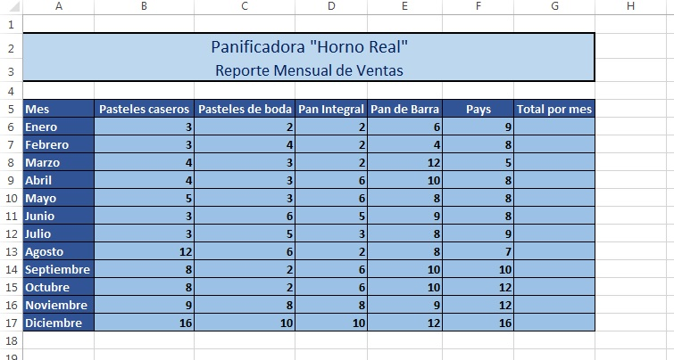

Inicio
Funciones
Introducción
En esta actividad utilizaremos funciones para realizar operaciones en excel, que requieren los valores de muchas celdas diferentes.
Actividad
1. Abre Excel.
2. Realiza la siguiente tabla con los datos que se muestran:

3. Ahora calcularemos los totales por mes usando la función suma. Observa el video:
4. Realiza lo mismo con los demás renglones.
5. Crea un gráfica tomando los meses y los totales como muestra el siguiente video:
6. El trabajo está terminado.